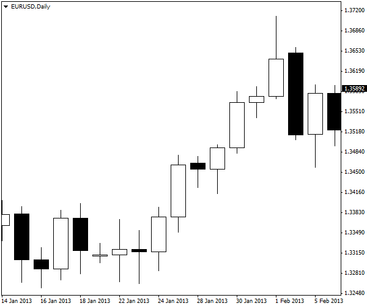
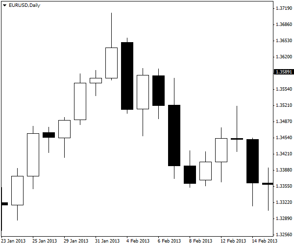

<!DOCTYPE html>
<html>
</html>
<head>
  <meta charset="utf-8">
  <meta http-equiv="X-UA-Compatible" content="IE=edge">
  <title>外汇站（fx-z.com） - 使用止损订单的重要性</title>
  <meta name="description" content="">
  <meta name="viewport" content="width=device-width, initial-scale=1">
  <meta name="robots" content="all,follow">
  <!-- Bootstrap CSS-->
  <link rel="stylesheet" href="vendor/bootstrap/css/bootstrap.min.css">
  <!-- Font Awesome CSS-->
  <link rel="stylesheet" href="vendor/font-awesome/css/font-awesome.min.css">
  <!-- Google fonts - Roboto-->
  <link rel="stylesheet" href="https://fonts.googleapis.com/css?family=Roboto:400,300,700,400italic">
  <!-- owl carousel-->
  <link rel="stylesheet" href="vendor/owl.carousel/assets/owl.carousel.css">
  <link rel="stylesheet" href="vendor/owl.carousel/assets/owl.theme.default.css">
  <!-- theme stylesheet-->
  <link rel="stylesheet" href="css/style.default.css" id="theme-stylesheet">
  <!-- Custom stylesheet - for your changes-->
  <link rel="stylesheet" href="css/custom.css">
  <!-- Favicon-->
  <link rel="shortcut icon" href="img/favicon.png">
  <!-- Tweaks for older IEs--><!--[if lt IE 9]>
    <script src="https://oss.maxcdn.com/html5shiv/3.7.3/html5shiv.min.js"></script>
    <script src="https://oss.maxcdn.com/respond/1.4.2/respond.min.js"></script><![endif]-->
</head>
<body>
  <div id="all">
    <div class="container-fluid">
      <div class="row row-offcanvas row-offcanvas-left"> 
        <!--   *** SIDEBAR ***-->
        <div id="sidebar" class="col-md-4 col-lg-3 sidebar-offcanvas">
          <div class="sidebar-content">
            <h1 class="sidebar-heading"> <a href="https://fx-z.com">fx-z.com</a></h1>
            <p class="sidebar-p">介绍外汇相关的基本知识，告诉您如何进行自己的技术面和基本面分析，讲解先进的交易理念，并且为您阐述失败交易者与专业交易者之间的真正区别。 </p>
            <p class="sidebar-p">通过这些课程的学习，您将学会如何根据自己的优势来应用情绪分析，还将了解真实世界的事件会对货币汇率产生什么影响，央行在外汇市场中所发挥的作用，以及交易者在颇受欢迎的即期外汇交易中有哪些选择方案。 </p>
            <ul class="sidebar-menu">
                <!-- Link-->
                <li class="sidebar-item"><a href="https://fx-z.com" class="sidebar-link">首页</a></li>
                <!-- Link-->
                <li class="sidebar-item"><a href="cihui.html" class="sidebar-link">外汇词汇</a></li>
                <!-- Link-->
                <li class="sidebar-item"><a href="ebook.html" class="sidebar-link">获取外汇电子书</a></li>
            </ul>
            <p class="social"><a href="https://www.forextimechina.com.cn/zh?form=IZIN" target="_blank"data-animate-hover="pulse" class="external facebook"><i class="fa fa-eur"></i></a><a href="https://www.forextimechina.com.cn/zh?form=IZIN" target="_blank" data-animate-hover="pulse" class="external gplus"><i class="fa fa-gbp"></i></a><a href="https://www.forextimechina.com.cn/zh?form=IZIN" target="_blank" data-animate-hover="pulse" class="external twitter"><i class="fa fa-rmb"></i></a><a href="https://www.forextimechina.com.cn/zh?form=IZIN" target="_blank" title="" class="external instagram"><i class="fa fa-dollar"></i></a><a href="https://www.forextimechina.com.cn/zh?form=IZIN" target="_blank" data-animate-hover="pulse" class="email"><i class="fa fa-money"></i></a></p>
            <div class="copyright text-center text-md-left">
             
              
            </div>
          </div>
        </div>
        <!--   *** SIDEBAR END ***  -->
        <!--   *** DETAIL ***-->
        <div class="col-md-8 col-lg-9 content-column white-background">
          <div class="small-navbar d-flex d-md-none">
            <button type="button" data-toggle="offcanvas" class="btn btn-outline-primary"> <i class="fa fa-align-left mr-2"></i>菜单</button>
            <h1 class="small-navbar-heading"> <a href="https://fx-z.com/17-7.html">下一篇 </a></h1>
          </div>
          <div class="row">
            <div class="col-xl-10">
              <div class="content-column-content">
                <h1>使用止损订单的重要性</h1>
  <p>
    止损订单的重要性强调多少次都不过分。正如 W. D. Gann 于 20 世纪 30 年代写道，如果您不使用止损，则问题不在于您是否会破产，而是何时破产。这是因为市场对外部冲击高度敏感，一小时内就能让您损失上百点。这些事件被称为 黑天鹅事件，因为它们在发生之前似乎是无法想象的。
</p>
<p>
    但是不出现黑天鹅事件，也能让您遭受灾难性损失。外汇杠杆的使用会扩大亏损。在外汇市场中，价格并非呈直线变化。即使强趋势也有多次回落，而且您永远不知道，回落何时开始，是小幅回落还是完全逆转。您能判断下图是否是小幅回落吗？
</p>
<p>
     看起来像一次回落。
</p>
<p>
    现在请看本图。原本为小幅回落，之后完全逆转：
</p>
<p>
     不再像小幅回落。
</p>
<p>
    显然，在下行走势早期退出比在后期退出更好。在走势早期止损让您留有足够的资本以继续交易。当您终于领悟这并非普通的回落，并且在走势快结束时离场时，您可能会亏损所有的交易本金。
</p>
<p>
    止损订单只有一个目的——即限制头寸的亏损。止损无法消除损失，只能将其限制在可控数额内。您可以为做多头寸设置卖出订单止损，或者为做空头寸设置买入订单止损。无论是哪种方式，止损都是指退出已开始转向亏损的头寸。对那些不得不退出市场的交易者进行采访后，他们的回答总是归结为“亏损大于盈利”。
</p>
<p>
    您可能认为，您会看着价格势如破竹地飙升，并在价格变为不利走势——心理止损点时离场。但实际上，在心理止损点退出是非常困难的。按照您的想象，再过几分钟，价格将返回原走势。这被称为“一切终将好转”的借口。
</p>
<p>
    或者您非常清楚是什么导致您的头寸走势逆转。据您判断，逆转并不合理。但市场对您的判断毫无兴趣。市场可能毫无理性、完全错误，但您需要记住，您的交易目的不是正确性，而是赚钱。
</p>
<p>
    这两种情况似乎都像理性思考，但它们其实只是您让情绪控制交易的借口。
</p>
<p>
    一些交易者拒绝止损的另一个原因在于，交易商会知道您的止损位，进而猎杀止损。这是由曾经破产两次的著名对冲基金交易者 Victor Niederhoffer 给出的理由。的确，由于他的头寸非常大，他可能会成为猎杀目标。但是他破产两次正是因为他没有使用止损，而且经历了突然的灾难性亏损。以下哪种情况更糟：是被经纪商戏弄，还是破产呢？
</p>
<p>
    毫无疑问，经纪商和其他人猎杀止损的目的是迫使您离场，以便他们稍后以更低的价格买入或更高的价格卖出。但实际上，没有人需要知道您的确切止损位（或许特别唯利是图的经纪商除外）。止损位被设置在有限的合理技术位，包括支撑线和阻力线、布林线和斐波那契线。任何有图表的人均能见到应该聚集止损位的地方。因为别人可能猜到您的操作而拒绝止损订单，这是一种因为愤怒而伤害自己的做法。任何特定情况下，当市场决定猎杀多头或空头头寸时，明智的策略是离场。
</p>
<p>
    使用止损订单的主要原因是为了实现理性交易计划的需求。在优秀的交易计划中，您已经事先知道可能的收益/亏损率。不要花光最后一分钱，因为市场总会时不时出现意外，但也有一些准确性。例如，每亏损 $1，您希望赚取 $2。实现这一目标的唯一途径在于，让您的大部分真实交易达到现实盈利目标，而且止损制度将亏损限制在收益的 50% 以下。随着时间的推移，这样的计划将稳定地积累资本。
</p>
<p>
    <strong>缺点</strong>
</p>
<p>
    止损操作确实有一定的缺点。首先，意外事件的发生可能导致缺口或大幅波动，以致于您的止损订单未能按照您指定的水平完成，而是以低很多的水平执行。之后，当您止损退出后，价格走势逆转并回到之前的轨迹——但您已退出。这肯定是尴尬而烦人的，但是您不得不接受这一活跃交易事实。抱怨暂时性冲击让您止损退出，就像抱怨房子着火后没有烧到大于免赔额的程度。
</p>
<p>
    另一个缺点是，价格回落会让您频繁止损。这不是工具的问题，而是操作者的问题。频繁止损意味着您设置的止损位不对，交易的货币对不对，或者交易的时间周期不对。如果一小时周期内，您的止损位是 15 点，但许多个小时内（经过许多天）高、低位平均范围为 30 点，那么您正面临着止损不当的风险。
</p>
<p>
    最后，您可能认为将止损位对外保密的方法在于设置心理止损位，以及在您的电脑、手机或其他唤醒设备上设置提醒系统。但如果您的爱犬发生意外，您必须赶紧送它去医院，或者您的路子着火，或者停电了呢？在紧急情况下，您的止损位可能没有被放在第一位。请在您设置交易时设置止损位。
</p>
<p>
    <br/>
</p>
<p>
    <br/>
</p>
              </div>
            </div>
          </div>
        </div>
      </div>
    </div>
  </div>
  <!-- JavaScript files-->
  <script src="vendor/jquery/jquery.min.js"></script>
  <script src="vendor/popper.js/umd/popper.min.js"> </script>
  <script src="vendor/bootstrap/js/bootstrap.min.js"></script>
  <script src="vendor/jquery.cookie/jquery.cookie.js"> </script>
  <script src="vendor/owl.carousel/owl.carousel.min.js"></script>
  <script src="vendor/masonry-layout/masonry.pkgd.min.js"></script>
  <script src="js/front.js"></script>
</body>